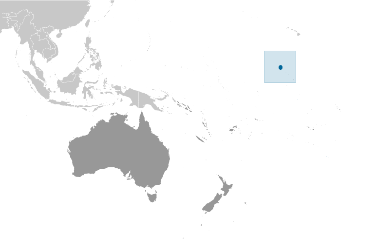
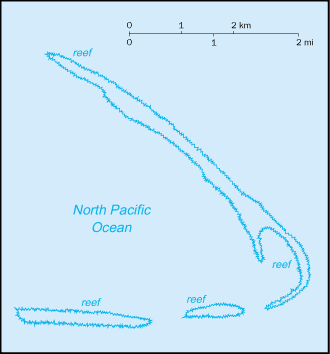
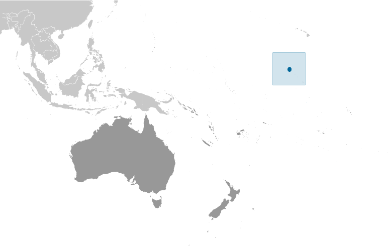
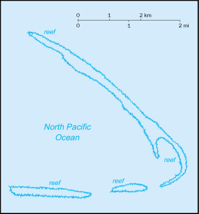

Australia-Oceania :: KINGMAN REEF
Introduction :: KINGMAN REEF
-
The US annexed the reef in 1922. Its sheltered lagoon served as a way station for flying boats on Hawaii-to-American Samoa flights during the late 1930s. There are no terrestrial plants on the reef, which is frequently awash, but it does support abundant and diverse marine fauna and flora. In 2001, the waters surrounding the reef out to 12 nm were designated a US National Wildlife Refuge.
Geography :: KINGMAN REEF
-
Oceania, reef in the North Pacific Ocean, about half way between Hawaii and American Samoa6 24 N, 162 22 WOceaniatotal: 1 sq kmland: 1 sq kmwater: 0 sq kmabout 1.7 times the size of The Mall in Washington, DC0 km3 kmterritorial sea: 12 nmexclusive economic zone: 200 nmtropical; moderated by prevailing windslow and nearly levelterrestrial and aquatic wildlifewet or awash most of the time, maximum elevation of about 1 meter makes Kingman Reef a maritime hazardillegal foreign fishing; marine debris washing up on reef can entangle and kill wildlifebarren coral atoll with deep interior lagoon; closed to the public
People and Society :: KINGMAN REEF
-
uninhabited
Government :: KINGMAN REEF
-
conventional long form: noneconventional short form: Kingman Reefetymology: although discovered in 1798, the reef is named after Captain W. E. KINGMAN who described it in 1853unincorporated territory of the US; administered from Washington, DC, by the US Fish and Wildlife Service of the Department of the Interiornote: on 1 September 2000, the Department of the Interior accepted restoration of its administrative jurisdiction over Kingman Reef from the Department of the Navy; Executive Order 3223 signed 18 January 2001 established Kingman Reef National Wildlife Refuge to be administered by the Director, US Fish and Wildlife Service; this refuge is managed to protect the terrestrial and aquatic wildlife of Kingman Reef out to the 12 nm territorial sea limitthe laws of the US, where applicable, applythe flag of the US is used
Transportation :: KINGMAN REEF
-
none; offshore anchorage only
Military and Security :: KINGMAN REEF
-
defense is the responsibility of the US
Transnational Issues :: KINGMAN REEF
-
none